Datawhale干货
作者：Codez，X博主
Datawhale干货
作者：Codez，X博主
上个月我们才发过一篇 Loop Engineering 的实操手册，现在新词就已经来了。
7月初，OpenClaw 创始人，在 X 上说：我们还在聊 loop，还是已经切到 graph 了？没过多久，就有人跟帖喊出「Loop Engineering 已死，Graph Engineering 永生」。
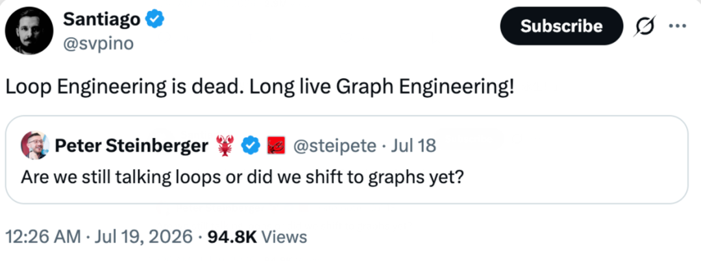
我们把 Codez 总结的 14 步整理了出来，全网570w人看过，讲的就是怎么从一个人的 loop，走到一张能自己路由的 graph。
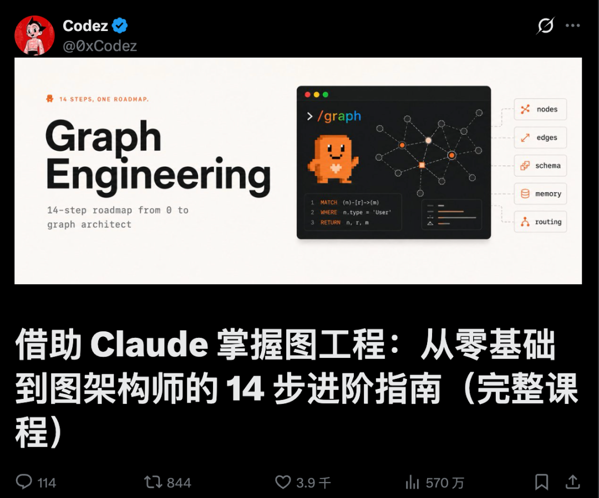
动手前：四个问题，决定你要不要 Graph Engineering
Graph 不是 loop 的升级版，是 loop 的组织方式。它烧的 token 比单个 loop 更多，协调开销也更高，出了问题你要 debug 的是一整张你没亲眼看着跑的路由图。所以先问自己四个问题，都想清楚之后，再动手。
一、这个任务真的能拆成不同角色吗？拆不出清晰的"谁负责什么"，那就还是一个 loop，加节点只是加成本。
二、有没有真正能并行的子任务？没有独立并行的活，图比循环贵，却不比循环快。
三、单个 agent 的上下文装得下全部背景吗？装得下，就别急着拆，拆分是为了腾出上下文，不是为了好看。
四、失败之后，你负担得起跳转分支的成本吗？没想清楚重试耗尽后去哪，图会在你看不见的地方卡死或者乱跑。
还有个附加题，比上面四个都重要：你已经有一个跑得稳的单体 loop 了吗？没有，先别建图。图是循环的组织方式，不是循环的替代品。
谁适合上手
已经把至少一个 loop 跑稳的团队，任务里有明确能拆开的角色（调研、撰写、复核），也接受更高的 token 成本换质量和并行度。
谁不适合上手
还没让一个 loop 稳定跑起来的个人开发者、线性依赖强拆不开的任务、瓶颈在协调开销而不在单节点能力的团队。
所以，graph engineering 真有用，但大部分人现在还用不上，因为大部分人的 loop 都还没跑稳，更别提图。
Graph Engineering 的四个核心构件
一张能跑的图，拆开来看，就是四个能各自单独验证的部分。
Nodes：图的最小单位。一个节点就是一个跑着自己 loop 的 agent 或确定性步骤，只认一件事，也只对一件事负责。节点判断不出"完了"，就不是节点，是隐藏依赖。
Edges：决定谁接下一棒。顺序边永远触发，条件边看检查结果，并行边一次分给多个节点，再汇到一个节点合并。边留给模型运行时判断得越多，图越灵活，但也越难预判。
Shared State：大家都要读写的那份数据。下游节点要用的字段，必须有上游节点写进去。这个对象会逼你承认，这活儿里到底还有多少环节没被真正想清楚。
Failure Routing：失败之后的退路。一个节点的重试耗尽了，控制权去哪：退回上一步、转给备用节点，还是转人工。没有失败边的图，只是一张流程图，不是一个能跑的系统。
第一步：先分清节点和边
01 节点是任务，边负责传数据
一张图其实只有两样东西，搞清楚这两样，大部分困惑就没了。节点是一个工作单元：一个 agent，一份边界明确的活，一个输入，一个输出。边是一种依赖关系：它表示这个节点的输出会喂给那个节点做输入，仅此而已。
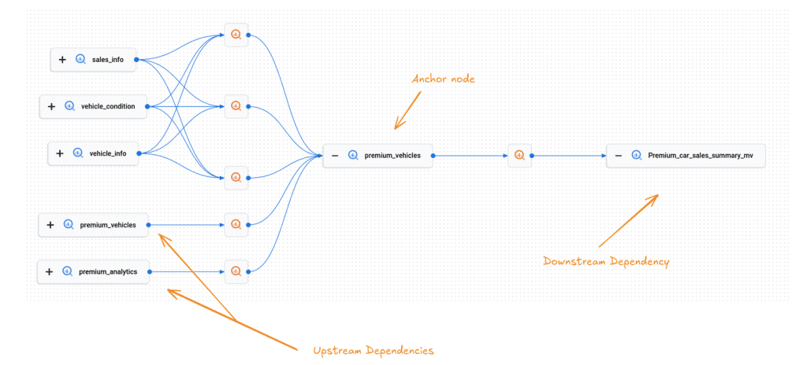
最容易犯的错，是把"然后"当成边。"总结这个文件，然后告诉我天气"，这两步之间没有边，天气根本用不到那份总结。这其实是两个互不相干的节点，被一段线性脚本硬凑成了先后顺序。没真用上数据，就没有边。
02 你的线性脚本，其实是一张退化的图
当你把一个 agent 写成"先做 A，再做 B，再做 C，再做 D"，其实你已经画出了一张图，只不过是一条不分岔的单链，每个节点都只有一条边进、一条边出。这样跑是能跑对的，但慢，也脆，因为一条链没有任何冗余：C 卡住了，D 就永远轮不到，A 的产出也被困在上游，没地方去。
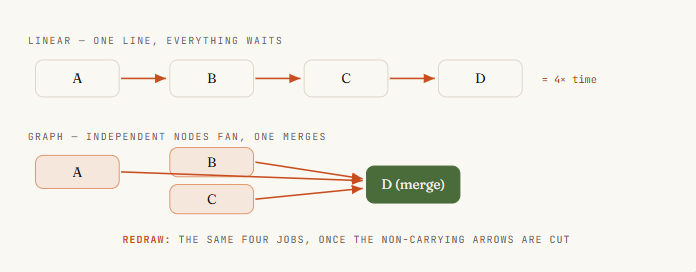
图工程的第一项真本事，是重新画这条链。拿着这个线性 agent，对每一根箭头问上一步的那个问题。大多数链里都有两三根箭头根本没有携带数据，它们只是当初写的时候顺手打的顺序。把这些箭头剪掉，链就会塌缩成更宽的东西：几个可以同时跑的独立节点，喂给一个需要它们全部到齐的节点。
第二步：给节点和边定契约
03 给每个节点定一份契约
一个你没法推理的节点，就没法拿去并行。解决办法是给它定一份契约：输入有边界，输出有边界，只干一件事。输入是节点要读的东西，必须显式传进去，不能指望它从共享窗口里蹭到什么。输出是一个定义好的形状，最好能校验，这样下一个节点不用猜也能直接用。
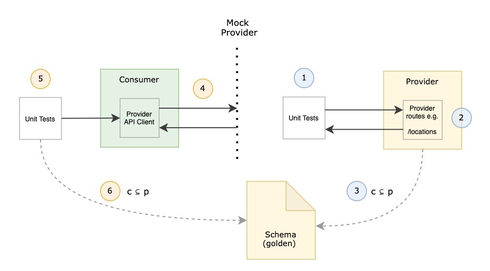
在 workflow 里，这份契约靠 schema 强制执行。给 Claude 的 agent() 调用配一份 JSON schema，Claude 派出去的 subagent 就只能返回校验过的结构化数据，校验发生在工具调用这一层，格式不对 Claude 会自己重试，不会甩给你一堆自由文本让你自己解析、自己祈祷。这就是"能接进图里的节点"和"只有人读得懂才行的节点"的区别。
// 一个有真契约的节点：输入有边界，输出经过校验，只干一件事const ITEM = {type: 'object', additionalProperties: false,properties: {title: { type: 'string' },url: { type: 'string' },impact: { type: 'string', enum: ['high', 'medium', 'low'] },},required: ['title', 'url', 'impact'],};const result = await agent(source.prompt, {label: `research:${source.key}`,schema: ITEM, // 强制返回校验过的结构化数据agentType: 'general-purpose',});// result 现在是下一个节点能信任的形状，不用再靠人工解析
04 把边也当成一份数据契约
边不只是"B 排在 A 后面"，它是一个关于"传的是什么"的承诺：A 产出这个形状，B 就是照着这个形状设计来消费它的。按数据给边命名，而不是按顺序命名，两件事会立刻变简单：能一眼看出这条边是不是真的存在（有没有数据真的传过去），也能在形状不变的前提下换掉边两端的节点，不会弄坏整张图。
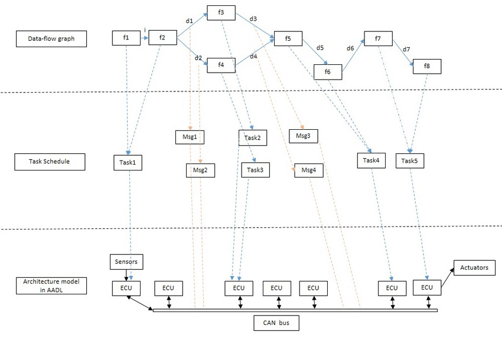
实际写的时候，边就活在普通的 JavaScript 里。派活和合成之间那一步归约，压平、去重、过滤，就是代码在处理节点返回的形状，不需要 agent。图思维一个不太起眼但很重要的收获是：很多人花模型 token 去做的事，其实就是一条边，而边是免费的。
第三步：构建扇出、扇入与菱形：最常用的拓扑
05 用 parallel() 扇出：把活儿一次性派出去
这一步能把前面的投入都赚回来。手上有 N 个独立节点，N 个要核实的信源、N 个要审的文件、N 条要查的路由，不要把它们串起来跑，让 Claude 把它们一次性派出去一起跑。在 workflow 里对应的是 parallel()：Claude 拿到一个函数数组，给每个函数派一个 subagent，全部并发执行，最后把结果数组一次性还给你。
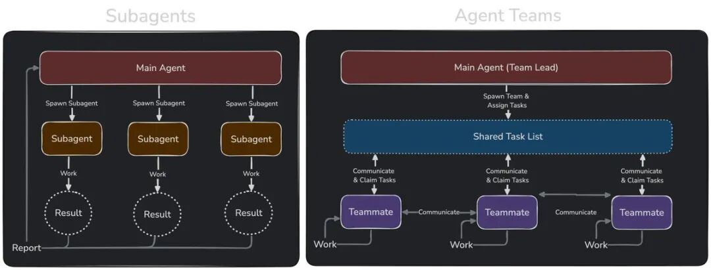
有两个细节决定它稳不稳。第一，parallel() 是一道屏障，会等所有函数都跑完才返回，下一阶段看到的是完整的结果集合。第二，一个抛错的函数会被解析成 null，而不是拖垮整个批次，一个状态不好的 agent 也拖累不了其他人，记得对结果做 .filter(Boolean)。并发数大致按核数封顶，多出来的会排队，扔进去一百个函数它们都会跑完，只是每次跑一小批。
phase('Research');// 九个信源，九个 agent，同时开工const raw = await parallel(SOURCES.map((s) => () =>agent(s.prompt, {label: `research:${s.key}`,phase: 'Research',schema: ITEM_SCHEMA, // 每个节点都返回校验过的 JSONagentType: 'general-purpose',}),),);const collected = raw.filter(Boolean); // 把失败 agent 留下的 null 过滤掉
派活这一步是活在 Claude 写的代码里，不是活在一轮模型对话里。Claude 自己的上下文从来不会同时装着九个信源，每个 subagent 带着自己的一份，只有最终答案会传回来。这就是 Claude 能把一次 workflow 扩展到几十上百个 subagent、却不会把这次会话淹没的原因，编排这一层不花 token，因为它不是 Claude 又想了一轮。
06 在屏障处做汇入
活儿派出去，得有东西能收拢它才有意义。拢回来的这个节点，就是边汇聚的地方：一个 agent（或一段代码）一次性看到全部上游结果，去做一件必须看到全集才能做的事，比如跨信源去重、按影响力排序、总数为零就提前退出。这是整张图里唯一值得让屏障付出等待成本的地方。
// 这条边就是普通 JS，没有 agent，零 tokenconst flat = collected.flatMap((c) => c.items);log(`Collected ${flat.length} items`);phase('Curate');// 这个屏障节点需要全部结果凑齐才能去重排序const curated = await agent(`Dedupe and rank these by impact:\n${JSON.stringify(flat)}`,{ phase: 'Curate', schema: CURATED_SCHEMA },);
只是把一个列表压平？那是一条边，直接写在行内就好。判断方法很简单粗暴：如果写成了 parallel → transform → parallel，中间那个 transform 又没有跨条目的依赖，那本该用流水线，完全不需要屏障。
07 菱形：拆分 → 工作 → 合并
把"派出去"和"拢回来"拼在一起，就得到了几乎每张正经 agent 图里都会出现的主力拓扑：菱形。一个节点拆任务，多个节点并行干活，一个节点合并。市场扫描、依赖审计、代码评审、研究报告，背后都是这个形状，换个信源和提示词，同一副骨架照样能用。
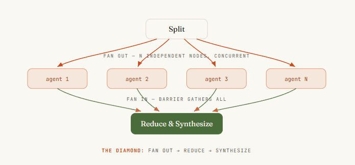
它的标准写法有个值得记住的名字：派发 → 归约 → 合成。先派出去收集广度，用普通代码归约压缩，再用最后一个 agent 合成写出答案。看懂这颗菱形之后，就不会再问"怎么让 agent 多做几步"，而是会问"拆分点在哪，合并点在哪"，这才是真正能扩展的问题。
第四步：路由、验证与隔离
08 用条件语句在运行时给边选路
不是每张图都是固定的。有时候走哪条边，取决于某个节点发现了什么。路由节点检查结果，决定走哪条下游路径：给工单分类后分流到对应处理节点，或者看 diff 大小，决定走快速评审还是完整审计。在 workflow 里这就是一个普通的 if 或 switch，判断依据是某个节点校验过的输出，因为控制流本来就活在代码里。
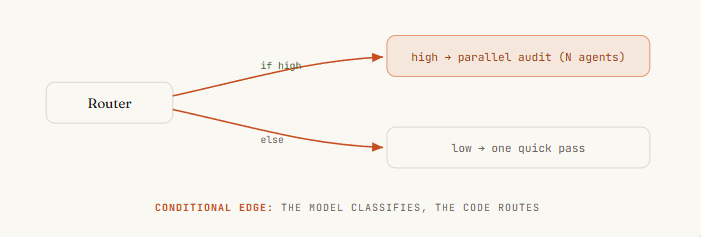
这正好是确定性变成优点而不是限制的地方。路由的判断可以由 Claude 完成（一个 subagent 负责分类），但路由本身是 Claude 写的代码，同样的分类结果每次都走同一条路。节点上拿到 Claude 的判断力，边上拿到脚本的可靠性，不会出现"Claude 自己决定跳过审计"这种意外，因为跳过这件事必须写进图里才会发生，而它没有被写进去。
// 路由节点：agent 负责分类，代码负责选边const { severity } = await agent(`Classify this diff's risk:\n${diff}`,{ schema: { type: 'object',properties: { severity: { enum: ['low', 'high'] } },required: ['severity'] } },);let review;if (severity === 'high') {// 高风险路径：完整并行审计review = await parallel(FILES.map((f) => () => agent(`Audit ${f}`)));} else {// 低风险路径：一次快速评审review = await agent(`Quick review of ${diff}`);}
09 在边上放一个验证器
一张图真正的杠杆不是塞了更多 agent，而是能围绕结果搭起多少确定性。验证器节点蹲在一个结果被放行到下游之前，它唯一的工作就是试图推翻这个发现。扛住了就放行，扛不住就到不了最终答案。
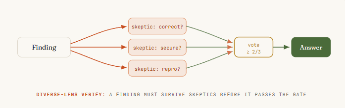
三种模式值得掌握：
对抗式验证：给每个发现派 N 个独立的怀疑者，专门去反驳它，多数没被驳倒才算站得住。
多视角验证：让每个验证者盯不同的方面，正确性、安全性、能不能复现，角度越分散，越能揪出 N 个一样的检查都发现不了的问题。
评委制：从不同角度生成 N 个方案，用并行的评委打分，挑最好的一版作为主线，再把其他几版里的亮点揉进去。
真实团队在移植 Bun 运行时的时候，就是靠这套对抗式代码评审焊进循环，才做成的。
10 把节点隔离开，别让一个失败污染整张图
在一条链里，失败会级联：C 死了，D 就跑不起来，整条链停摆。在一张图里，失败本该被限制在它自己的节点里。这一点已经部分成立：parallel() 里一个抛错的函数会被解析成 null，八个正常的 agent 照样能返回结果，一个坏的自己掉队，.filter(Boolean) 就是那道防线。把每一次汇入都设计成能容忍缺失的输入，而不是假设总能凑齐全集。
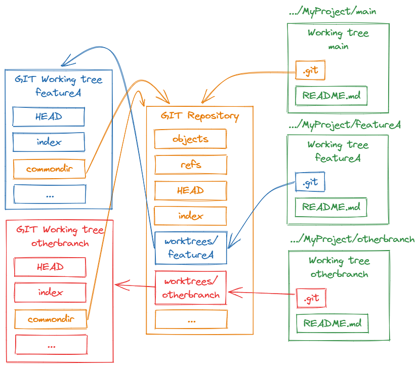
更隐蔽的失败，是节点之间互相踩到对方。多个 agent 并行写文件时可能会撞车，解法是隔离：用 git worktree，让每个 agent 在自己的一份工作区里干活，在沙盒里完成，再干净地合并回去。只在节点真的会并行写入的时候才用它，它是那种拓扑真正需要的安全带，不是每次运行都要交的税。
第五步：循环、模型分层与拓扑
11 可以加一个循环，但一定要让它收敛
要是压根不知道这活儿有多大呢？只有真的做下去才知道：规模未知的探索，一次漏洞排查发现一个 bug 又带出三个新的。这时候需要一个循环，一条指回更早节点的、受控的边。危险也很明显：一个不收敛的循环，就是一台不停派 agent 出去、直到预算耗尽才停的死循环机。
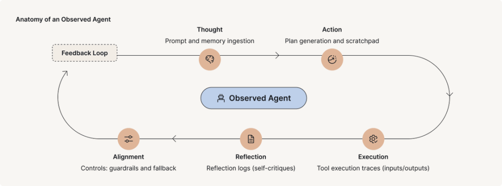
能收敛的写法叫"跑到干为止"：持续派出发现者，直到连续 K 轮都没发现新东西，才停下来。真正决定成败的细节，也是几乎每个人第一次都会踩的坑，是拿什么去做去重比对。要对着"见过的一切"去重，而不是只对着"已确认的结果"去重。不然被否掉的发现每一轮都会重新冒出来，循环永远跑不干，最后搭出的是一台专门花钱去反复发现同一批死胡同的机器。
const seen = new Set(); const confirmed = []; let dry = 0;while (dry < 2) { // 连续两轮空手而归就停下const found = (await parallel(FINDERS.map((f) => () => agent(f.prompt, { schema: BUGS })))).filter(Boolean).flatMap((r) => r.bugs);const fresh = found.filter((b) => !seen.has(key(b)));if (!fresh.length) { dry++; continue; }dry = 0;fresh.forEach((b) => seen.add(key(b))); // 对"见过的一切"去重，不是只对已确认的// 每个新发现都要过一轮多视角验证才算数const judged = await parallel(fresh.map((b) => () =>parallel(['correctness', 'security', 'repro'].map((lens) => () =>agent(`Judge "${b.desc}" via ${lens} — real?`, { schema: VERDICT }))).then((v) => ({ b, real: v.filter(Boolean).filter((x) => x.real).length >= 2 }))));confirmed.push(...judged.filter((v) => v.real).map((v) => v.b));}
12 给不同节点分配不同档位的模型
不是每个节点都需要最好的模型。一张图会用单个 agent 永远做不到的方式，把这件事摆明白：有些节点干的是有边界、会重复的活，比如抽取一个字段、给工单分类；有些节点承载真正的判断力，比如合成报告、裁定一个发现是否成立。干重复活的节点放到便宜模型上跑，token 留着花在真正需要判断力的地方。
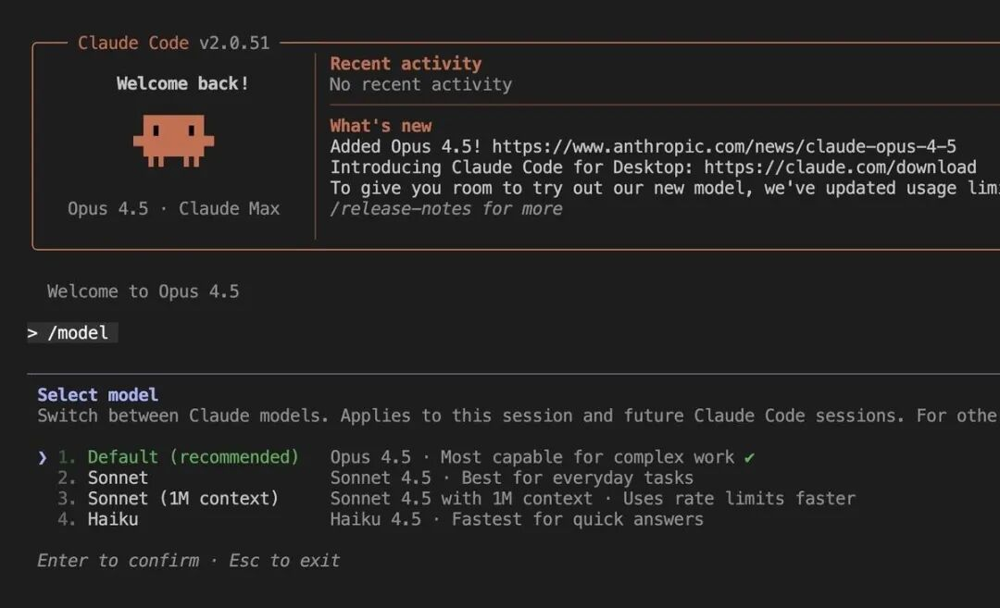
在 workflow 里，Claude 派出去的每个 subagent 默认继承这次会话的模型，除非脚本里显式覆盖，所以默认情况下一次大规模运行的账单会全按会话档位算。单次 agent() 调用上的 model 选项，能让 Claude 单独把这一个节点换到别的模型上跑。大规模运行前先看一眼 /model，让 Claude 把派出去的那些重复性节点降到便宜模型，合并节点留在高档位，这个办法能把一张烧 token 的图从贵变便宜，还完全不用动它的形状。
13 拓扑结构，就是你的成本和延迟
图的形状不是装饰，它是决定运行时间的最大杠杆。最容易踩坑的选择是 parallel() 还是 pipeline()。parallel() 这道屏障会让所有东西都等最慢的那个节点，才进入下一阶段。pipeline() 让每条数据各自独立地依次经过所有阶段，没有屏障，条目 A 可能已经在第三阶段了，条目 B 还在第一阶段，跑得快的提前结束，不用在慢的后面干等。
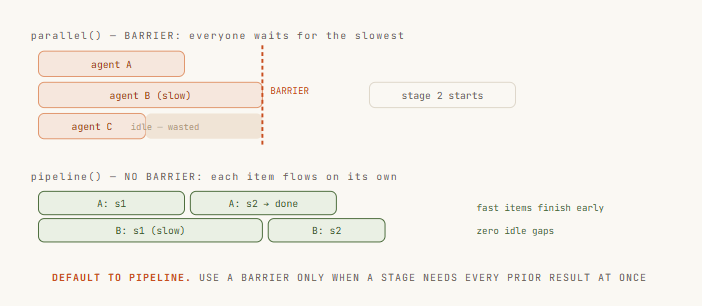
默认用 pipeline()。只有一个阶段真的需要全部前置结果同时到齐时才用屏障，比如跨集合去重、按总数提前退出、需要对照"其他发现"来写的 prompt。"代码更干净"和"这些阶段感觉是分开的"都不是理由，屏障带来的延迟是真实的、可测量的、被浪费掉的时间，分开不代表必须同步。
最后一步：让 Claude 自己画图
14 让 Claude 自己画图，自我路由
最后一步，是对那些没法提前规划的活儿，不再自己动手画图。用 dynamic workflows，只要描述目标，Claude 会自己写编排脚本：拆解任务、决定怎么把活儿派出去、派出一队 subagent、再合成结果。拿到的是一张为这次运行量身定做的图，而不是一张你希望它恰好合适的固定图。
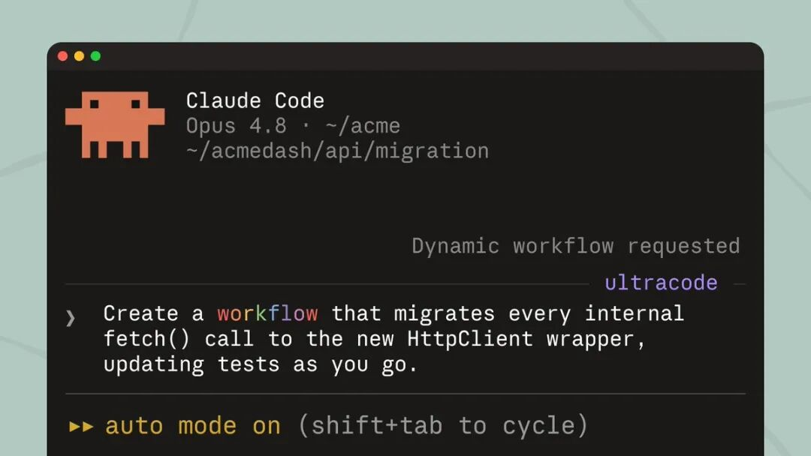
有三种用法。在 prompt 里说出"workflow"这个词，Claude 就会为这个任务写一份。跑一个已经存好或内置的，比如 /deep-research，就是一张已经在生产里跑着的真实图：定范围 → 并行搜索 → 抓取 → 对抗式验证 → 合成，正是这门课从头到尾讲的那副骨架。或者打开 ultracode，Claude 会给这次会话里每个像样的任务都规划一次 workflow。跑得好的时候按 s 把脚本存进 .claude/workflows/，从此可以版本控制、按名字重新运行，谁 clone 了这个仓库都能直接跑起来。
› Run a workflow to audit every route under src/routes/ for missingauth. Spawn one agent per route file, then verify each finding beforereporting.● Claude wrote an orchestration script · launching in background…/workflows — auth-audit · running ✓Scope 1/1 2.1k tokFan-out 18/18 one agent per route fileVerify 11/18 3-vote skeptics per finding…Synthesize 0/1 waiting on verify// 会话保持响应，队伍在后台继续跑
两年来，多 agent 协作的杠杆一直在单个 loop 上：更好的 verifier，更稳的退出条件，更干净的状态文件。
而现在，把这些 loop 怎么连起来，成了新的护城河。
一起“点赞”三连↓